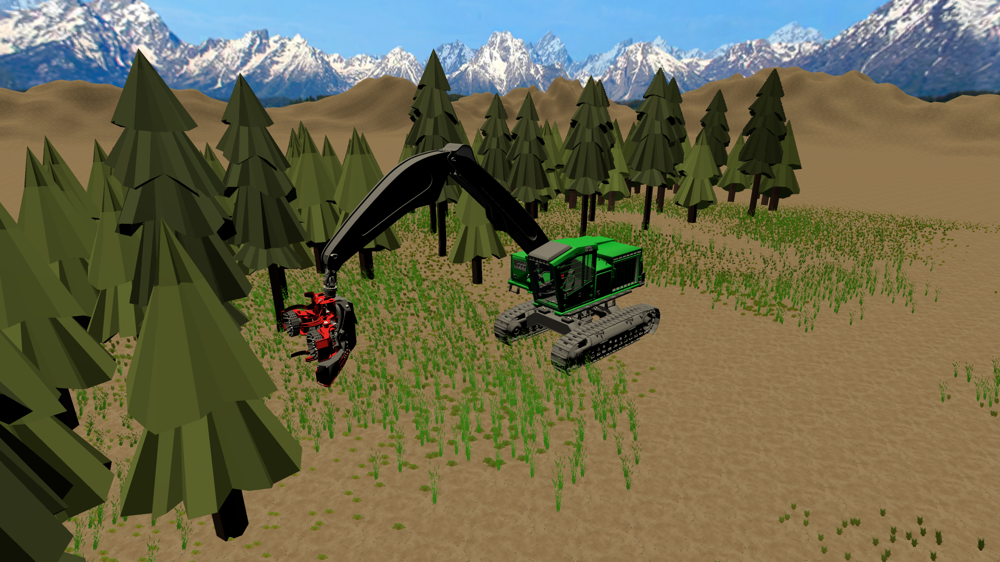

Train by doing: a first-person VR simulation for learning real harvester operation skills.
The Harvester Simulator is one of two core components of Timber Trainer VR. It is designed to teach new operators how to control and operate a forestry harvester through hands-on, immersive practice in virtual reality.
Traditional training requires expensive machinery and introduces safety risks for beginners. This simulator removes those barriers by allowing users to safely practice core skills in a controlled, repeatable environment.

The simulator focuses on the fundamental skills required for basic harvester operation. Training is divided into three progressive modules:
Each module builds on the previous one, helping trainees develop confidence and muscle memory before advancing.
The Harvester Simulator is designed to run on standalone VR headsets such as the Oculus Quest. This allows for portable, cost-effective deployment without requiring external hardware or complex setup.